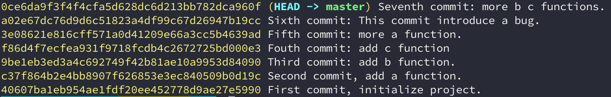

二分法及其应用
A sample
在聚餐的酒席上，我们经常会玩一个游戏，随机一人写下0到100间的一个数字N，其他人轮流报一个数字，让区间逐步逼近数字N，直到叫到N的人喝酒。其中会有人去中间数字快速缩小范围。
Definition
对于区间[a，b]上连续不断且f（a）·f（b）<0的函数y=f（x），通过不断地把函数f（x）的零点所在的区间一分为二，使区间的两个端点逐步逼近零点，进而得到零点近似值的方法叫二分法。

Application scene
Binary search
Description:
将n个元素的单调数列，二等分两个区间，剔除没有目标元素的区间，继续等分区间查找，直到锁定目标元素或者区间不能再划分。Algorithm:
1
2
3
4
5
6
7
8
9def binary_search(arr, start, end, key):
if start > end:
raise Exception('NotFound: %s' % key)
mid = start + (end - start) / 2
if arr[mid] > key:
return binary_search(arr, start, mid-1, key)
if arr[mid] < key:
return binary_search(arr, mid+1, end, key)
return midConclusion:
Binary insertion sort
Description:
Insert sort: 将n个元素的数列分为已有序和无序两个部分，每次处理就是将无序数列的第一个元素与有序数列的元素从后往前逐个进行比较，找出插入位置，将该元素插入到有序数列的合适位置中。
Binary insertion sort: 将n个元素的数列分为已有序和无序两个部分，每次处理就是将无序数列的第一个元素与有序数列的元素从后往前二分进行比较，找出插入位置，将该元素插入到有序数列的合适位置中。Algorithm:

1
2
3
4
5
6
7
8
9
10
11
12
13
14
15
16
17
18
19
20
21
22
23
24
25
26
27
28
29
30
31
32
33
34
35
36
37
38
39def binary_search(collection, key):
"""Pure implementation of the binary search algorithm in Python.
:param collection: some mutable ordered collection with heterogeneous
:param key: the search keyword
:return: the replace address
"""
def __binary_search__(collection, start, end, key):
if start > end:
return start
mid = start + (end - start) / 2
if collection[mid] > key:
return __binary_search__(collection, start, mid-1, key)
if collection[mid] < key:
return __binary_search__(collection, mid+1, end, key)
return mid+1
return __binary_search__(collection, 0, len(collection)-1, key)
def binary_insertion_sort(collection):
"""Pure implementation of the binary insertion sort algorithm in Python.
:param collection: some mutable ordered collection with heterogeneous
:return: the same collection ordered by ascending
Examples:
>>> binary_insertion_sort([0, 5, 3, 2, 2])
[0, 2, 2, 3, 5]
>>> binary_insertion_sort([])
[]
>>> binary_insertion_sort([-2, -5, -45])
[-45, -5, -2]
"""
for loop_index in range(1, len(collection)):
insert_point = binary_search(collection[0:loop_index], collection[loop_index])
if insert_point == loop_index:
continue
collection = (collection[0:insert_point]
+ [collection[loop_index]]
+ collection[insert_point:loop_index]
+ collection[loop_index+1:])
return collectionConclusion:
Binary merge sort
Description:
选择中间的数，把数组对半划分。分别对子问题a和子问题b进行排序，最后把这两个排好序的问题综合到一个问题。Algorithm:
1
2
3
4
5
6
7
8
9
10
11
12
13
14
15
16
17
18
19
20
21
22
23
24
25
26
27
28
29def merge_sort(collection):
"""Pure implementation of the merge sort algorithm in Python
:param collection: some mutable ordered collection with heterogeneous
comparable items inside
:return: the same collection ordered by ascending
Examples:
>>> merge_sort([0, 5, 3, 2, 2])
[0, 2, 2, 3, 5]
>>> merge_sort([])
[]
>>> merge_sort([-2, -5, -45])
[-45, -5, -2]
"""
def merge(left, right):
"""merge left and right
:param left: left collection
:param right: right collection
:return: merge result
"""
result = []
while left and right:
result.append((left if left[0] <= right[0] else right).pop(0))
return result + left + right
if len(collection) <= 1:
return collection
mid = len(collection) // 2
return merge(merge_sort(collection[:mid]), merge_sort(collection[mid:]))Conclusion:
How to find the middle element of a linked list
Description:
现有一个不知长度的链表，如何找到中间结点。Algorithm:
git bisect
Description:
Use binary search to find the commit that introduced a bug.This command uses a binary search algorithm to find which commit in your project’s history introduced a bug. You use it by first telling it a “bad” commit that is known to contain the bug, and a “good” commit that is known to be before the bug was introduced. Then git bisect picks a commit between those two endpoints and asks you whether the selected commit is “good” or “bad”. It continues narrowing down the range until it finds the exact commit that introduced the change.
In fact, git bisect can be used to find the commit that changed any property of your project; e.g., the commit that fixed a bug, or the commit that caused a benchmark’s performance to improve. To support this more general usage, the terms “old” and “new” can be used in place of “good” and “bad”, or you can choose your own terms. See section “Alternate terms” below for more information.
Usages:
1
2
3
4
5
6
7git bisect
start # to start our bug or fix binary search session
bad # to claim the bad commit end
good # to claim the good commit start
reset # to reset search session
... # use `git bisect --help` to find more detailsAn example:
现有一个如下git log的示例项目，假设项目中出现bug字符串的是有问题的，利用git bisect找到是哪个提交导致的这个问题的。
查找流程：